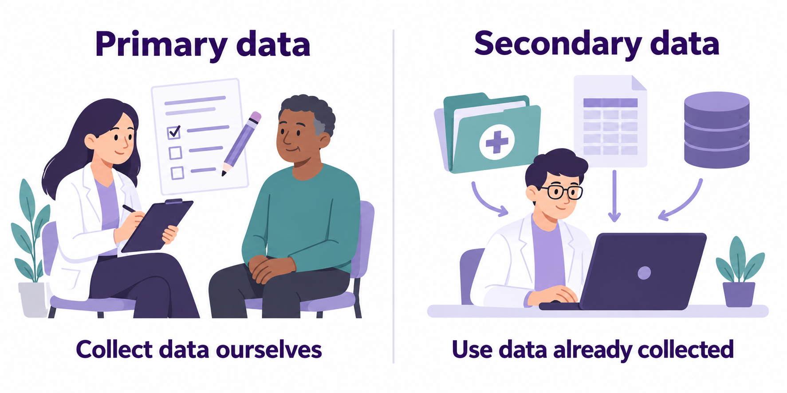
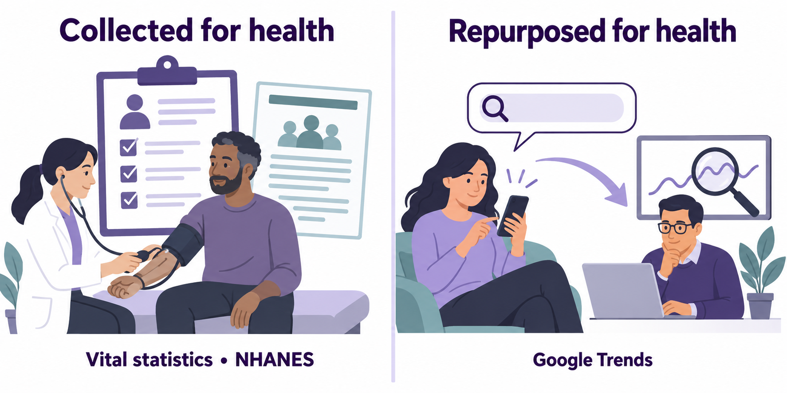

Primary vs. Secondary Data

APHS 20203 • Epidemiology & Biostatistics
By the end of this week, you should be able to:
What does data linkage mean?
A. Removing identifying information from a database.
B. Summarizing records within a single database.
C. Joining information from databases using a common identifier.
D. Collecting new information through a health interview.

What is the main purpose of data mining?
A. Finding previously unrecognized patterns in large amounts of data.
B. Proving that every observed relationship is a cause of disease.
C. Replacing electronic records with printed copies of the same information.
D. Removing every error from a collection of health records.

How do census data help us calculate population-based disease rates?
A. They identify the immediate cause of each recorded death.
B. They confirm the diagnosis of each reported disease case.
C. They describe the treatment received by each hospital patient.
D. They provide population counts for the denominator of a rate.

What limitation of death certificate data does the chapter describe?
A. Most deaths in the United States go unrecorded.
B. The recorded cause of death may be inaccurate.
C. Death certificates do not include demographic information.
D. Death certificates cannot be used to study mortality.

What is the main purpose of public health surveillance?
A. Continuously collecting, analyzing, and sharing health information to guide public health action.
B. Providing individual treatment plans during routine appointments with healthcare providers.
C. Collecting health information once and storing it without analysis or interpretation.
D. Assigning participants to treatments to compare the effects of different medicines.

What makes a disease a reportable disease?
A. Its cases are described in a published research article.
B. Its cases are counted in the population census.
C. Its cases are discussed in a television news report.
D. Its cases must be reported to health authorities under law.

What is a case registry?
A. A list of citations to published health research articles.
B. A centralized database of information about a disease and its cases.
C. A count of all residents in a geographic area.
D. A schedule of appointments available at a healthcare clinic.

How does the National Health and Nutrition Examination Survey (NHANES) differ from the National Health Interview Survey (NHIS)?
A. NHANES gathers death certificates instead of conducting interviews.
B. NHANES uses only interviews, while NHIS adds physical examinations.
C. NHANES adds physical examinations to interviews, while NHIS uses interviews only.
D. NHANES gathers published research articles instead of information from participants.


Our county wants to understand barriers to staying safe during extreme heat. We can fund one initial approach:
Option 1. Interview residents about cooling access and transportation. We can ask exactly what we need to ask, but recruitment takes time and some residents may not respond.
Option 2. Analyze existing emergency-department records. They contain detailed records of serious health events, but miss people who never reach an emergency department.
Option 3. Combine existing housing, tree-cover, and population data. They describe neighborhood conditions, but do not tell us who became ill.

Which group consists entirely of vital events?
A. Births, deaths, and hospital admissions.
B. Births, marriages, and vaccinations.
C. Births, deaths, marriages, divorces, and fetal deaths.
D. Deaths, divorces, and new cancer diagnoses.
Correct answer: C. Vital events include births, deaths, marriages, divorces, and fetal deaths.
https://www.cdc.gov/nchs/nvss/index.htm
Open CDC’s Mortality in the United States, 2024. Each pair takes one task:
A. Life expectancy: Find life expectancy at birth. Explain why it is not a promise about how long a particular newborn will live.
B. Death rates: Find the age-adjusted death rates for 2023 and 2024. Explain what age adjustment contributes to the comparison.
C. Leading causes: Find which cause entered the top ten in 2024. Did its age-adjusted death rate increase?
Produce two sentences: one accurate finding with year and units, and one interpretation or limitation.
CDC: Mortality in the United States, 2024
| Measure | 2023 | 2024 |
|---|---|---|
| Life expectancy at birth | 78.4 years | 79.0 years |
| All-cause age-adjusted death rate | 750.5 | 722.1 |
| Suicide age-adjusted death rate | 14.1 | 13.7 |
The certifying clinician documents this sequence:
COVID-19 → pneumonia → acute respiratory distress syndrome → death.
The clinician also documents diabetes as contributing to the death.
A reader says:
“The person died of respiratory distress, so this should not count as a COVID-19 death.”
In two sentences, explain what the reader has misunderstood. Then identify one uncertainty that could still affect the accuracy of the death certificate.
Simulated numerator: During 2025, 2,248 Tarrant County residents died from a fictional condition.
1. Find the population estimate most appropriate for this numerator. Record its value and date.
2. Calculate deaths per 100,000 residents.
QuickFacts currently reports 2,248,466 residents on July 1, 2025, and a 2020 Census count of 2,110,640. Census source
\[ \frac{2,248}{2,248,466} \times 100,000 \approx 100.0 \]
VITAL STATISTICS
REPORTABLE/NOTIFIABLE DISEASE DATA
Reportable Diseases
Notifiable Diseases
Public Health Surveillance
Syndromic Surveillance
Emergency departments record an unusual increase in fever-and-cough visits this week. Laboratory results are still arriving.
1. What can we reasonably conclude now? 2. What information would help us interpret the signal? 3. What could explain the increase besides more infections?
Would waiting for death certificates answer the same question soon enough?
| Source | What it can offer |
|---|---|
| NHIS — National Health Interview Survey | Reported health conditions, functioning, and healthcare access |
| NHANES — National Health and Nutrition Examination Survey | Interviews, examinations, and laboratory measurements |
| BRFSS — Behavioral Risk Factor Surveillance System | State-level adult data on behaviors, chronic conditions, and preventive services |
For your group’s disease topic:
“To learn [what] about [whom], we would first examine [source] because [reason]. We would still need to check [limitation].”
Data quality reflects whether the assumptions behind our measures hold.